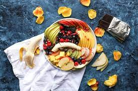

Home
fruits
Fruits contain vitamins, minerals, and antioxidants. Of course, fruits contain much more than just fiber and fructose.The nutritious peach is chock-full of antioxidants and may protect from heart disease, cancer, and moisture loss in your skin, among several other benefits.One orange provides the recommended daily amount of vitamin C.Provide nutrients vital for health and maintenance of your body, such as fiber, vitamin C, potassium, and folate.

by Medium
by pickpik
healthy